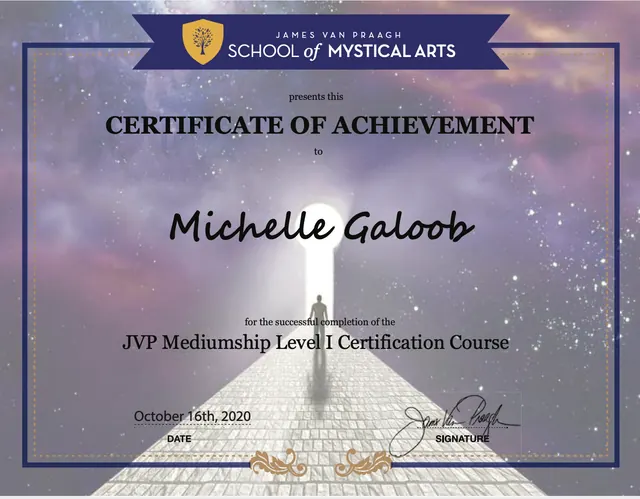
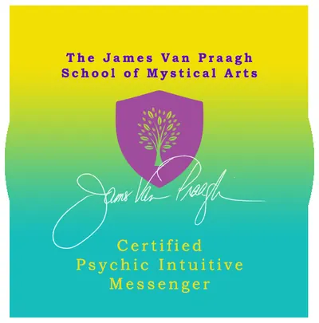

About Michelle Galoob
My intuitive gift
My name is Michelle Galoob and I am a channel, guide and soul whisperer. My life's purpose and what brings me joy is to help you connect to your perfected self. I find the pathway to that part of you which already has all your answers but is often hard to access. While I am able to engage with your soul and your guides in the spiritual realm, I am really grounded. No airy fairy here! My focus is to share with you what your soul wants you to know.
The Story Untold: how I found my unique gift and learned to trust my spirit guides
How it started
I've always considered myself an intuitive person. Without ever thinking about it, throughout my life friends would gravitate to me, and I loved finding solutions to their problems and giving them advice.
About 13 years ago, my husband and I had been experiencing many life challenges. It was then we were really at our rock bottom. And because of that it was the first time in my life I'd ever really asked the universe for help. Not asked but begged. (I'd hate to admit it but I was always the one who thought I could find a solution myself and I never wanted to burden anyone with my problems, not even the universe!)
That very night that I begged for help, I saw a vision of someone very dear to me who had recently passed. The first thing I thought was — am I really seeing this? Am I awake? I was very much awake.
We proceeded to have a conversation where he gave me clarity on all areas of my life that felt blocked and it was one of the most magical experiences I'd ever had. The next morning, I told my husband what happened. He was as dumbfounded as I was.
Anyone that knows me, knows that I am an extremely levelheaded, grounded, person. In fact, I'm usually the first person to condemn anything that's "woo woo" sounding, as I like to call it.
Shortly after this I started hearing voices in my left ear. Suddenly, I knew things about people without having to ask them. I would be out with friends, or at some social event, and this information would appear in my mind as naturally as my own thoughts. At first, I did not know what to make of these "voices," at best it might be some type of psychic gift, at worst, I might be schizophrenic.
Besides my husband, I had only told one friend about it at the time. I said, "I don't know what's happening to me, I think I'm going crazy." My friend said, "No, I think your third eye is open." Then, she suggested I go to a tarot card reader and ask her to teach me.
After months of hearing these voices, and being unable to manage them, I considered that my friend might actually be right. So I went to this old lady tarot card reader who, after flipping over the first card I picked, told me that my third eye was open and that someone would teach me how to access and manage my gift in the month of March.
Finding my teacher
Come March, I'd forgotten all about what the tarot card reader had told me. Then I met a woman from Argentina, a renowned healer. One of the first things she told me was, "Your third eye is open." We met for coffee, and immediately I knew this was my teacher. In fact, she confided in me that she'd been guided to come to LA, to meet someone and teach them everything she knows. She was like my Mr. Miyagi!
Over the next 10 months, this healer taught me how to connect to the Akashic records, a virtual library of thoughts and actions, past, present, and future. Inside this library, everyone has a file, and I'm able to access this file — not to be nosey — but to help people find their true potential and connect with their soul.
I am truly excited and blessed to be able to share my gift with you helping you to find answers that already lie within you.
Certifications


Michelle has also been a guest on podcasts including The Adult Chair, Women in the Arena, Life is a Garden, Find Your Fierce and Famous Interviews. Listen to her interviews →
Ready to hear what your soul wants you to know?
Contact
Questions before you book? Reach Michelle directly.
Tel: 424.777.3672
Email: michellegaloob@gmail.com
PLACEHOLDER — contact form not recreated. The live Wix contact form and mailing-list form submit to Wix, so this static preview does not include them (no new form endpoints). At launch: keep the Wix form, or connect the existing Kit opt-in. Phone and email above are live.
See readings & book